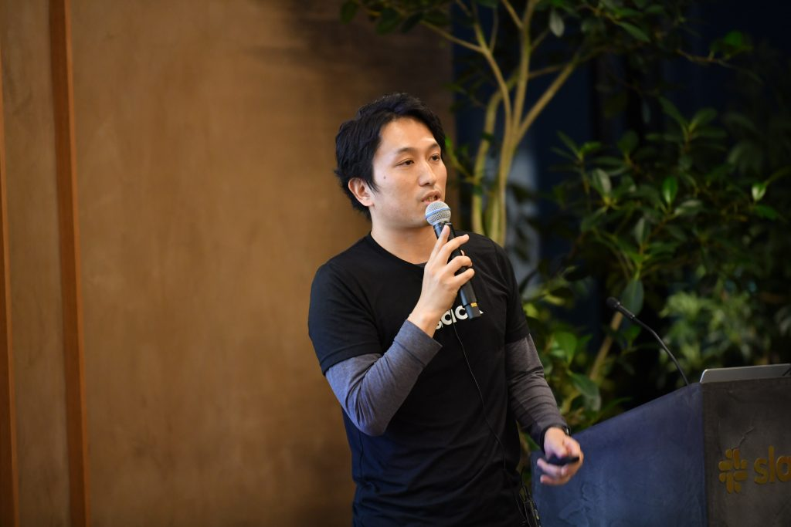
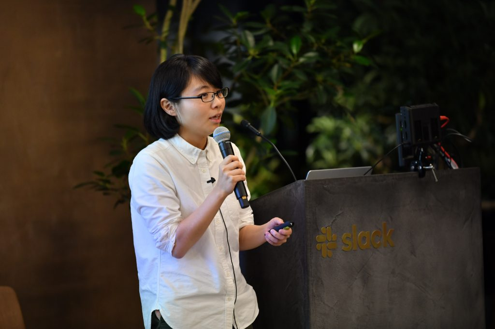
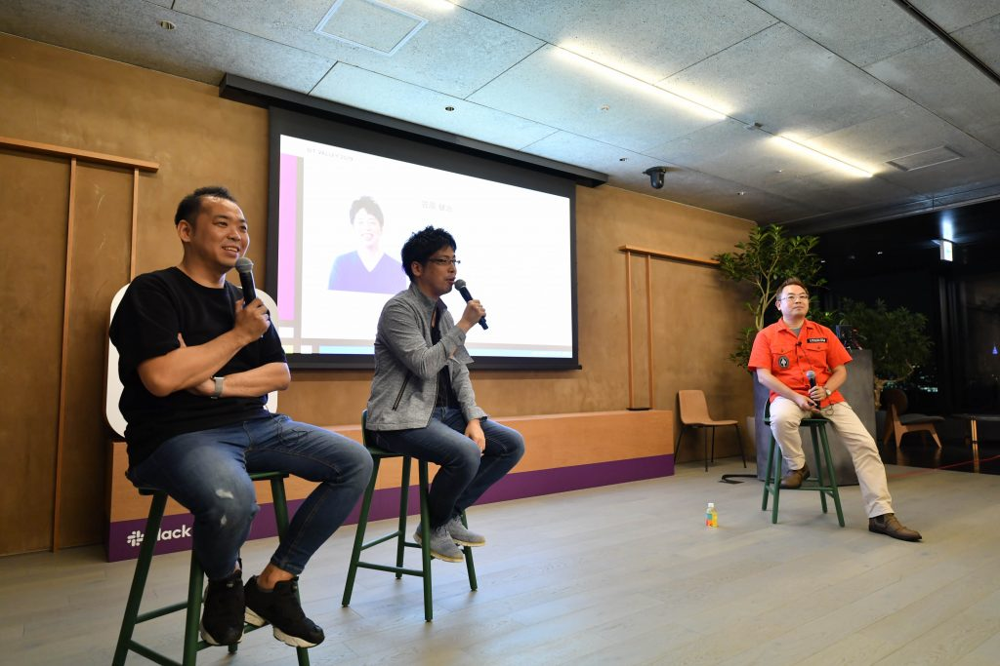

News
2019年7月11日（木）19時よりSlack Japan社 新オフィス（東京・大手町）にて、
【BIT VALLEY 2019 プレイベント】モノづくりで変わりゆく未来 〜BIT VALLEY 2019 序章 〜 と題し、プレイベントを開催いたしました。
最新テクノロジーについてのお話や、モノづくりに関するこれまでや今、未来についてのトークセッションなど
短い時間ではございましたが、内容の濃いプレイベントとなりました。

「Slack Platform の今」
Slack Japan 株式会社 瀬良 和弘氏

「衛星データとオープン＆フリープラットフォーム「Tellus」のこれから」
さくらインターネット株式会社牟田 梓氏

「モノづくりが拓く、私たちの未来の生活」
（写真左から）
パネリスト：株式会社メルカリ 小泉 文明氏、株式会社ミクシィ 笠原 健治氏
モデレーター：技術評論社 馮 富久氏
YouTube Liveのアーカイブを公開いたしましたので、合わせてご覧ください。
BIT VALLEY 2019 実行委員会